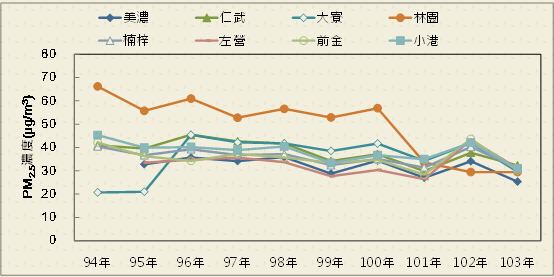
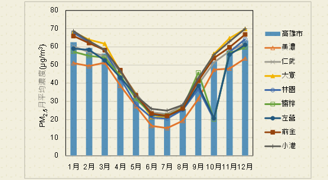
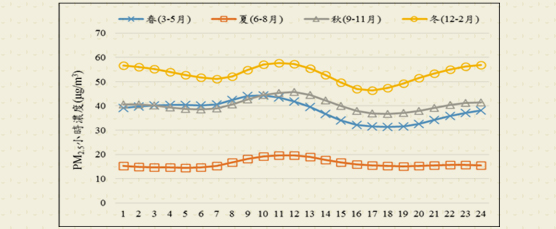
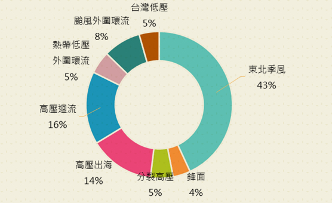

細懸浮微粒空品監測資料蒐集
1.空氣品質測站資料收集
本團隊目前收集高雄市空氣品質測站資料，統計高雄市歷年(94~103年)各測站細懸浮微粒年平均值約20~30μg/m3，其中以仁武、前金、左營、小港及大寮較為偏高，皆在30以上，如圖1所示。統計高雄市歷年(94~103年)各測站PM2.5月平均濃度如圖2所示，最高出現於每年冬季(12~2月)，夏季(6~8月)之月平均濃度為最低。由於部份PM2.5為衍生污染物，台灣常處於亞洲大陸下風處，隨著不同季節的氣象條件，受到境外污染物不同程度的影響，因此對台灣PM2.5來源而言，除台灣本身排放物外，境外長程傳輸的影響亦值得探討。

圖1歷年高雄市自動測站PM2.5濃度平均值趨勢圖

圖2 歷年每月高雄市自動測站PM2.5濃度平均值趨勢圖
2.PM2.5各季節濃度變化趨勢
本團隊依據氣象資料，將四季區分為春季3~5月、夏季6~8月、秋季9~11月及冬季12月~2月。以下就各測站資料進行分析，如圖3所示。PM2.5平均濃度值以冬季為最高，夏季為最低，最高濃度多集中於上午10時至下午13時之間及入夜之下午22時至下午24時之間。推測原因係台灣冬季(12~2月)時受大陸地區沙塵暴產生之懸浮微粒輸送之現象，造成台灣空品測站於冬季時PM2.5濃度偏高。

資料來源：環保署監資處
圖3 高雄市測站歷年各季PM2.5小時平均濃度
3.高雄市103年度空品測站PM2.5事件日氣象條件分析
本計畫分析103年度PM2.5超過35μg/m3之事件日發生時間，主要發生時段為冬季及春季(如圖4)，統計本市103年度間事件日共181日，比對事件日發生之天氣型態以東北季風增強時為主(43.1%)，高壓迴流次之(16.0%)。

圖4103年PM2.5事件日天氣型態統計
")